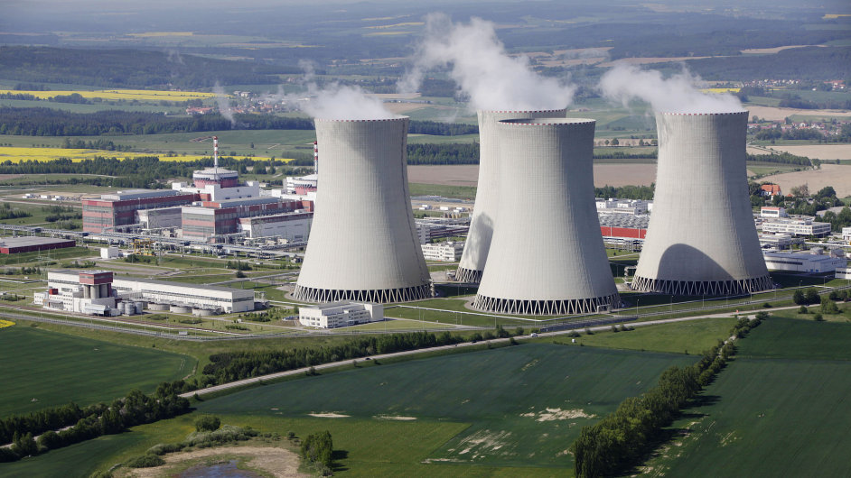

Jihočeský kraj je chudý na nerostné suroviny
Nejvíce se zde těží žula (východ), rašelina (Třeboňsko), grafit (Českokrumlovsko), sklářské písky a cihlářské hlíny
Kraj se zaměřuje na potravinářský, strojírenský, dřevozpracující, papírenský a energetický průmysl
Důležitá je jaderná elektrárna Temelín

Závody:
Budějovický Budvar - České Budějovice - pivo
Koh-i-noor - České Budějovice - psací potřeby
Jihočeské mlékárny - České Budějovice - mléčné výrobky
ČZ Strakonice - Strakonice - motocykly
Jitex Písek - Písek - textil
Rybářství Třeboň - Třeboň - chov a zpracování ryb
Jaderná elektrárna Temelín - Temelín - výroba elektřiny